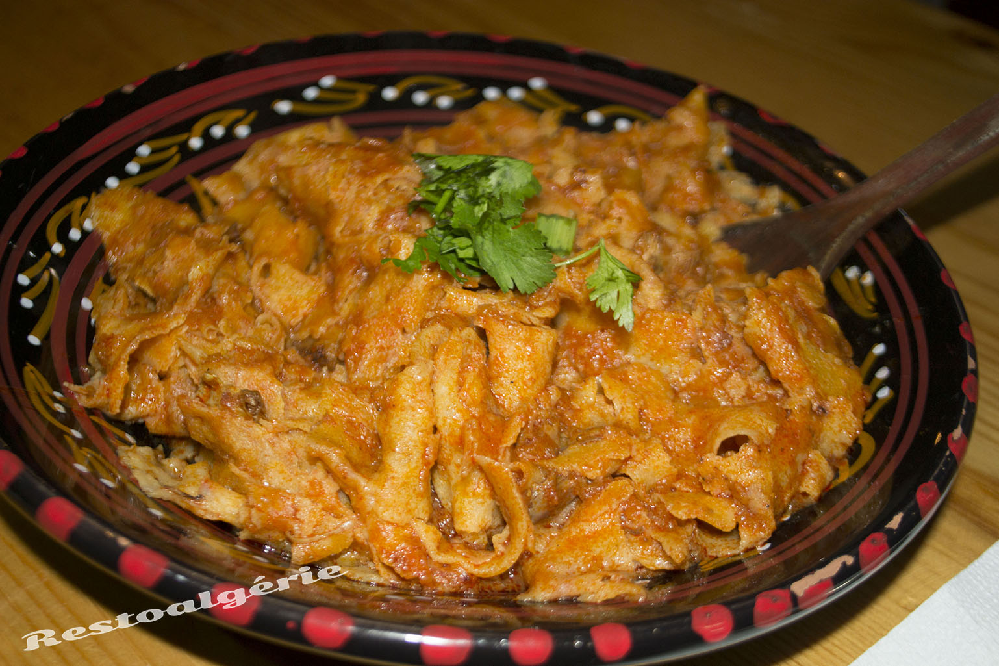

Chakhchoukha

Description
Chakhchoukha (also spelled Chakhchouka or Chekhchoukha) is a traditional North African dish, particularly popular in Algeria. It’s a rich and hearty meal that combines torn flatbread with a fragrant, spiced meat and vegetable stew.
The name comes from the verb "chakhchoukha", meaning "to tear into small pieces", referring to the preparation of the bread. There are regional variations, with the most well-known being Chakhchoukha Constantinoise and Chakhchoukha Biskria.
Ingredients:
For the flatbread (Rougag or Rechta-style semolina bread):
- 2 cups fine semolina
- ½ cup all-purpose flour (optional)
- ½ tsp salt
- ¾ cup water (adjust as needed)
- 1 tbsp oil (for kneading)
For the stew:
- 500g lamb or beef (bone-in for extra flavor)
- 2 tbsp olive oil
- 1 onion, finely chopped
- 2 cloves garlic, minced
- 2 large tomatoes, peeled and chopped (or 1 cup canned)
- 2 tbsp tomato paste
- 1 tsp paprika
- 1 tsp ground caraway
- 1 tsp ground coriander
- ½ tsp cinnamon
- ½ tsp black pepper
- Salt to taste
- 1 or 2 dried chili peppers (optional, for heat)
- 2 carrots, chopped
- 2 zucchinis, chopped
- 1 cup chickpeas (pre-soaked overnight or canned)
- Water or broth (enough to cover the ingredients)
Steps to make it:
1. Make the Flatbread (Rougag):
- In a large bowl, mix semolina, flour, and salt.
- Gradually add water and knead until you get a smooth, elastic dough.
- Let rest for 15–30 minutes covered.
- Divide into small balls, roll each one thin (like a tortilla), and cook on a hot dry skillet or griddle until lightly golden and cooked through.
- Stack the breads, and once cool, tear or cut them into small bite-sized pieces (like squares or rough strips). Set aside.
2. Prepare the Stew:
- Heat olive oil in a large pot or tagine. Brown the meat on all sides.
- Add chopped onion and garlic. Sauté until translucent.
- Stir in spices and tomato paste, then add the chopped tomatoes. Cook for a few minutes until tomatoes break down.
- Add chickpeas, carrots, and enough water or broth to cover.
- Simmer for about 45 minutes to 1 hour, until meat is tender.
- Add zucchini in the last 15 minutes of cooking so they don’t overcook.
- Adjust seasoning and let the sauce thicken slightly.
3. Assemble the Dish:
- Just before serving, place the torn flatbread into a large serving dish.
- Ladle the hot stew over the bread and mix well, allowing the bread to absorb the sauce.
- Let it sit covered for 5–10 minutes so everything melds together.
- Serve hot, garnished with fresh parsley or coriander if desired.
Go back to Homepage